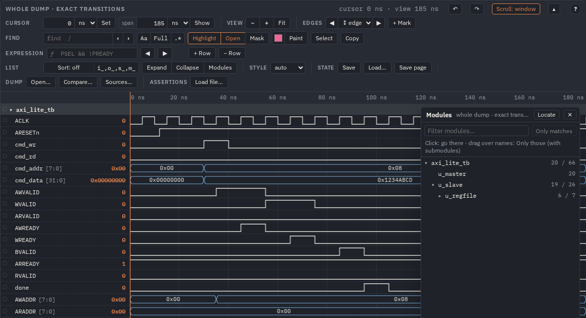
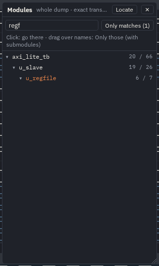
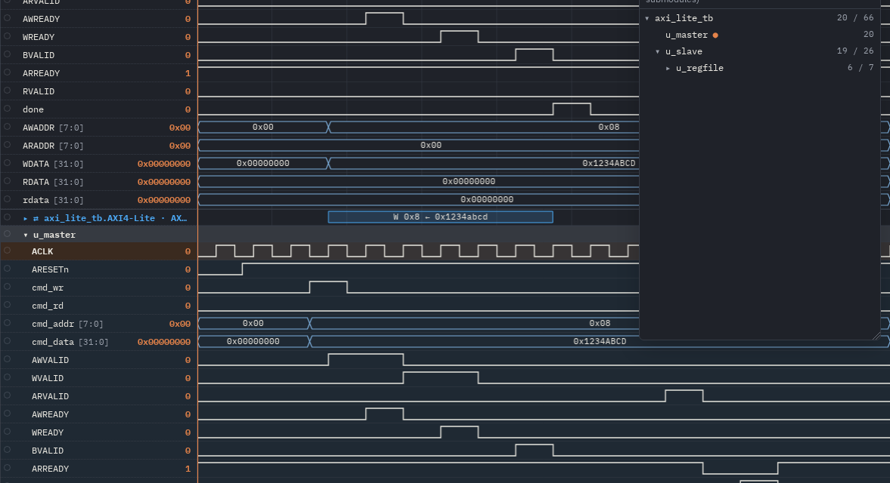
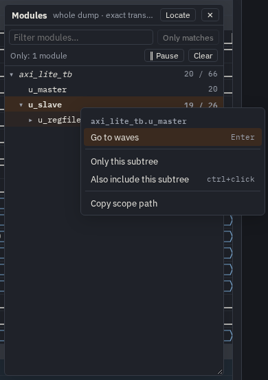
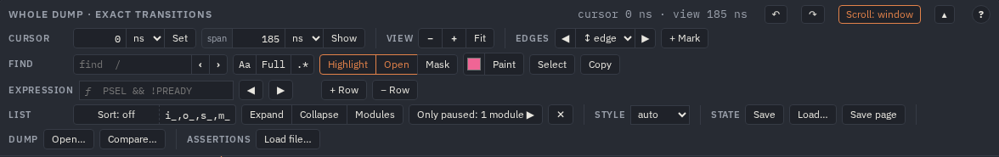
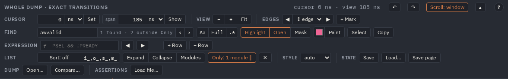

Modules
A dump of a whole design has hundreds of instances. The Modules panel shows them as a tree, without the
signals, next to the waves. A click on a module goes to its signals; a box drawn over a few modules keeps Only those on
the waves, with the hierarchy around them as it is built. The pictures are of the AXI-Lite example's whole dump
(make examples, out/examples/axi_lite/axi_lite_all.html).
Opening the panel
t on the waves, Modules in the bar's list group, or Modules… in the right button's menu. The panel floats over the waves at their right, so the names stay in sight: its header moves it, its corner sizes it, Esc or ✕ closes it (Esc in the filter empties it first; on a narrow screen it is a drawer at the side). Per module it shows the number of its own signals and, after the slash, of those with its submodules; ● marks the module of the selected signal. Locate (or t in the panel) finds that module in the tree.

axi_lite_tb has 20 signals of its own and 66 with its submodules;
the tree opens two levels at first, u_regfile under u_slave stays folded.The tree folds on its own: folding a module there does not fold it on the waves. A page has one panel per viewer; the panel is not printed and not in a picture.
Finding a module
The field on top filters the tree the way the find field filters the names: the typed letters in order anywhere in a module's name
(regf finds u_regfile), a word with a . over the full path. The modules on the way to a match
stay as its context. Enter goes to the first match, ↓ moves into the tree,
Only matches (shift+Enter) keeps every module the filter found.

regf: one match, its name in the accent colour, the two modules above it kept.A click goes there
A click on a name (or Enter) opens that module and the ones above it in the names column — a module you hid is shown again — and selects its first signal (its own, else one of a submodule) in the middle of the waves. The rest of the folding stays as it was, so you can jump between distant instances without losing your place.

u_master. Everything else was folded; the click opened the way to it and selected its
first signal.Only the modules you pick
Drag a box over one or more names in the tree (4 px is enough to start one): from then on the waves show only those modules, their submodules included. The modules on the way to them stay as headers — their own signals go, the hierarchy stays as it is built — and every other module leaves the waves; the tree still lists them all. The modules you named open on the waves with the ones above them; the ones under them keep the folding they had.

u_slave. In the tree it is marked, u_regfile under it lighter, the testbench
in italics (on the way); on the waves the testbench is a header without its own signals and u_master is gone. The bar
says Only: 1 module ‖.| In the tree | Does |
|---|---|
| a box over names, shift+click, shift+↑ ↓ | Only those modules (a run) |
| ctrl+click, Space | one module into the set, or a picked one out of it (one under a picked module is in by its parent: it opens) |
| Only matches, shift+Enter in the filter | every module the filter finds |
| click, Enter | go to the module (outside Only: Only is paused to show it) |
| ↑ ↓ Home End, ← → | move; fold / open (the parent / the first child) |
| /, t, Esc | the filter; the selected signal's module; close the panel |
The right button on a module of the tree has the same as a menu, and two more: Expand / Collapse subtree in the tree and Copy scope path.

Pause, resume, clear
Only: N modules ‖ in the bar pauses it: every module is back, the set is kept, and the button turns into Only paused: N modules ▶, which resumes it. ✕ next to it clears the set. A click in the tree on a module Only leaves out pauses it too, and goes there. Pausing, resuming and clearing fold or open nothing.

With Hide, find and the pictures
- Hide stays as it is under Only: a row you hid is not shown again by Only, and Only does not hide rows for good.
- Find still searches every row and counts what Only leaves out:
1 found · 2 outside Only. Only paused (or a click on their module) brings them in. - Highlight of a row Only takes away comes back with it; the selection it takes away goes.
- The picture (PNG, SVG), WaveDrom, Paint, the compare's ]d [d and the assertions' steps take only what is in the view.

awvalid is in all three modules; Only u_slave shows one, the count
says the other two.What is kept
Only is part of what you do with the waves, not a setting of the page: it is in the saved state
(Save: "only": {"modules": [...], "on": true}), in Save page and in undo
(ctrl+Z), but this browser does not keep it: a page opened again starts with every module, unless the page itself
carries an Only (a page saved with Save page while Only was on, or edits that set it). The command
only does the same from a script or an agent (Commands and scripts):
await v.run([{op: 'only', modules: ['axi_lite_tb.u_slave']}]); // on; {op: 'only', on: false} pauses, {op: 'only', clear: true} clears